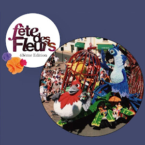

Le Twirling Club Macairois Présent !

Cette année, le Club de Twirling Club Macairois est de retour avec une participation des plus chaleureuses. Nous sommes ravis de rejoindre les festivités et de partager notre énergie débordante lors de ce défilé tant attendu.
Les membres des équipes F12 et F14, sous la direction attentionnée de leurs coachs, ont répondu présent pour apporter leur talent, leur grâce et leur dynamisme à cet événement déjà plein de vie.
Dimanche 19 Mai
10h-21h: Marché des créateurs sur la Place Sainte Marguerite
10h30-12h: Aubade traditionnelle
14h30: Départ de la caravane publicitaire Rue Choletaise
15h-19h30: Défilé majestueux
23h-23h30: Feu d'artifice
10h-2h: Fête Foraine sur la Place du Prieuré
Lundi 20 Mai
10h-19h: Marché des créateurs sur la Place Sainte Marguerite
10h30-12h: Autre aubade traditionnelle
14h30: Départ Rue Choletaise
15h-19h30: Autre défilé grandiose
21h30-23h30: Embrasement du char à brûler
10h-24h: Fête Foraine sur la Place du Prieuré
Le lieu
Créativité et Dévouement
Les rues seront emplies des couleurs chatoyantes des fleurs en papier crépon, confectionnées à la main par des bénévoles dévoués.
Les chars, véritables œuvres d'art éphémères, seront le fruit de six à huit mois de travail acharné, nécessitant des millions de fleurs collées une à une.
Une Tradition Florale Éclatante
La traditionnelle Fête des Fleurs de Saint Macaire-en-Mauges, un événement biennal qui enflamme les rues de la commune, se profile à l'horizon.
Prévue pour les 19 et 20 mai prochains, cette célébration met à l'honneur la nature, le printemps, et l'esprit communautaire.
Depuis sa création en 1931, cette fête est devenue un pilier du patrimoine local, attirant chaque année des milliers de visiteurs venus admirer les splendides chars fleuris,
les défilés colorés, et les animations festives qui ponctuent le weekend.
Cette année ne fait pas exception, avec une édition préparée avec soin par le comité des fêtes, présidé par Alain Coutolleau, et son équipe dévouée.
Cette Fête des Fleurs est bien plus qu'un simple événement festif. C'est un moment de partage, de créativité et de convivialité où se mêlent les générations et les passions.
C'est l'occasion pour Saint Macaire-en-Mauges de briller de mille feux, et pour ses habitants de célébrer ensemble la beauté de leur commune et de sa nature luxuriante.
Les liens
Le Facebook de la Fête des fleurs
Article Ouest France
Article de la Commune
Article de Sèvremoine
Article sur Osezmauges
Article sur Anjou Tourisme